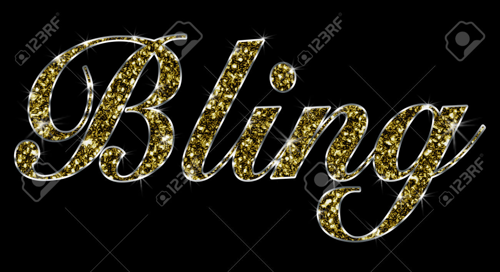

Gold is a warm color that can be either bright and cheerful or somber and traditional. This color is a cousin of yellow and brown, which is also associated with illumination, love, compassion, courage, passion, magic and wisdom.
gold is a precious metal that is associated with wealth, grandeur, and prosperity, as well as sparkle, glitz, and glamour. Gold gemstones are believed to increase personal wisdom and power, aid in health and wellness, create success and prosperity and illuminate the path towards your goal.
Gold is also the color of success, achievement and triumph. It is a sign of abundance and prosperity, luxury and quality, prestige and sophistication, value and elegance, and the psychology of this color implies affluence, material wealth and extravagance. The color is linked to masculine energy and the power of the sun, compared to silver which is associated with feminine energy and the sensitivity of the moon.
Bibliography
- Bourn, Jennifer, and About Jennifer BournCreative Director · Digital Strategist · WordPress Evangelist As founder of Bourn Creative, Jennifer is an award-winning designer who has been working in the branding and design trenches since 1997. Today she consults on brand developm. “Meaning of The Color Gold |.” Bourn Creative, 3 June 2016, www.bourncreative.com/meaning-of-the-color-gold/.
- “The Color Gold.” Empowered By Color, www.empower-yourself-with-color-psychology.com/color-gold.html.
- “Games with Gold | Xbox Live.” Xbox.com, www.xbox.com/he-IL/live/games-with-gold.
- “Treasure Chest Pictures, Images and Stock Photos.” Treasure Chest Pictures, Images and Stock Photos - IStock, www.istockphoto.com/photos/treasure-chest?excludenudity=true & sort=mostpopular &mediatype=photography &phrase=treasure%2Bchest.
- “The Word Bling Made of Golden Shiny Gold Jewelry with Black Background.” 123RF Stock Photos, www.123rf.com/photo_49920069_the-word-bling-made-of-golden-shiny-gold-jewelry-with-black-background.html.